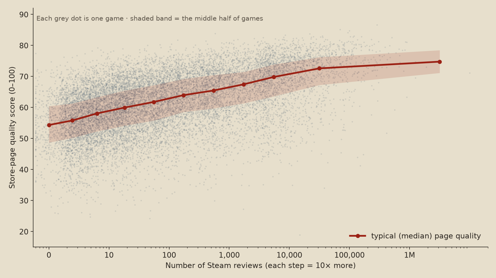

Do great games get ignored on Steam?
We had an AI judge the store pages of 14,836 Steam games, then checked how many players each game actually reached. Here is what we found.
There is a scary idea that many people who want to make games believe in: you spend years building something great, you put it on Steam, and… nothing. Nobody plays it. Nobody notices.
If that were true, it would mean Steam is basically a lottery: you could do everything right and still lose. If it is false, it means something much more hopeful: if you make something good, players will very likely find it, so your future is mostly in your own hands.
So we tested it with real data.
A great-looking game is not guaranteed to be a hit, but it changes the odds enormously. On Steam, quality is not a lottery ticket. It is the biggest lever you control.
Your odds, depending on how good your page is
We sorted all games from the worst-looking store page to the best and split them into ten equal groups. Each bar shows what happened to the games in that group.
Look at the black part: in the worst group, 55% of games reached almost nobody. In the best group, only 8% did. Meanwhile the red parts (hits) grow from 2% to 33%.

So… hope or despair?
Mostly hope. Here is the honest version:
- A great game almost never gets nothing. If your page is in the top 10%, 92% of the time you get past the "almost nobody" zone, and 1 in 3 become hits with 1,000+ reviews.
- But great does not mean guaranteed. About 1 in 4 games with a top-5% page still stayed small (under 100 reviews). Luck, timing, genre and marketing still matter.
- The slogan: a great game almost never gets nothing, but it doesn't always get everything.
Making your first game?
This part matters, so we checked it separately. About 37% of Steam games are the first game ever released by their developer and publisher. For them:
| First game, page quality… | Almost nobody (<10) | Stayed small (<100) | Hit (1,000+) |
|---|---|---|---|
| Bottom half | 60% | 92% | 2% |
| Top 10% | 20% | 66% | 11% |
A great first game is 3× less likely to vanish and 5× more likely to become a hit. But most first games, even great ones, start small. The single strongest predictor of success in our data was how successful the developer's and publisher's previous games were: having an audience already. Good news: that is also something you build yourself, one game, one devlog and one community post at a time.
Real examples
Great pages, huge success

287,116 reviews · 97% positive

506,227 reviews · 96% positive

158,374 reviews · 97% positive

899,933 reviews · 98% positive
Great pages, almost nobody came
These exist, but they are rare: only about 5% of games with a top-5% page ended up here. Notice that the few people who played them loved them. Go give them a try!

6 reviews · 100% positive · 2021

6 reviews · 83% positive · 2019

8 reviews · 100% positive · 2017

9 reviews · 100% positive · 2020
Plain pages, huge success anyway
The opposite also happens, almost always with a famous name behind it. A big brand can carry a plain page, which is exactly what a new developer doesn't have.

170,240 reviews · from 2000

72,488 reviews

52,091 reviews

45,820 reviews
We are not showing the lowest-scoring pages by name: they are mostly tiny projects by beginners, and the point of this page is not to make fun of anyone. They typically have a capsule that is just a screenshot with text, unfinished-looking graphics and a one-line description.
What makes a store page look "good"?
We asked the AI dozens of specific questions about every page. These were the most linked to reaching more players:
| Helps | Hurts |
|---|---|
| Professional capsule art (the main image), the strongest signal of all | Placeholder or unfinished-looking graphics in screenshots |
| A real, designed title logo | Using a plain screenshot as the capsule image |
| Screenshots that look polished and use your own art | |
| A page that looks trustworthy and memorable, the kind you'd click on | |
| A description that makes you feel something, with a strong first line |
Careful: these are links, not proven causes (see below). But they line up with common advice from people who sell games on Steam.
How we did it
- The list. We started from 85,152 Steam games and their review counts (from SteamSpy).
- The sample. We picked 14,836 of them so that every level of success is well covered, from zero reviews to millions. Because we picked more successful games than exist in reality, we gave each game a weight so the results represent all of Steam. It is like a survey that interviews extra people from small towns and then adjusts the numbers.
- The page. For each game we downloaded what you see on its Steam store page: the capsule image, 4 screenshots, and the short and long descriptions (from Steam's own store API).
- The judge. An AI model (Jev, by TypeSafe) answered 46 questions about each page, such as "How good is this capsule art?", "Do the screenshots show real gameplay?" and "Does the description make you feel something?". The page quality score (0–100) is the average of the 29 questions that rate quality. The AI never saw how many reviews a game had.
- Designing the questions. We tested the questions in 4 rounds on 60 random games each, and threw away questions where the AI gave every game the same answer or wasn't sure.
- Checking the judge. Asked the same questions twice, the AI gave almost identical answers (correlation 0.99). A human also rated 240 pages blind (no names, no review counts). When the human liked one page more than another, the AI agreed about 7 to 8 times out of 10.
- Measuring success. Steam keeps sales secret, so we used the number of reviews. A common rule of thumb: 1 review ≈ 30–60 copies sold.
The whole AI evaluation took 12 minutes and cost about $4.
Careful: what this does not prove
- Linked is not the same as caused. Teams that make great pages often also have money, experience and fans. A computer model that predicts reviews from facts like "who made it, when, price, genre and languages" explained about 65% of the differences between games. Adding page quality raised that to about 69%. Page quality alone explained 45%. So the page matters, but a lot of its power overlaps with who is behind the game.
- We looked at pages as they are today. Successful games often polish their page after they succeed. When we only kept games whose art wasn't updated more than a year after launch, the link got weaker but stayed clearly there.
- The AI knows some famous games. It recognizes titles like Hades, which could nudge their scores up. Leaving out every game it recognized made the link a bit weaker, but it was still there.
- The AI judges the page, not the fun. Screenshots show how a game looks, not whether it is fun to play.
- Brand-new games are under-counted. Our list of Steam games misses many recent games with zero reviews. In reality the "almost nobody" group is probably even bigger, mostly among weak pages.
- Reviews are not sales. They are the best public clue, but the 30–60× rule changes with genre and price.
For the curious: the strength of the link between page quality and (log) reviews, measured with a weighted Spearman correlation, is +0.40 for the overall score and +0.45 for capsule art alone (0 = no link, 1 = perfect). With the strictest controls it stays around +0.30. Weighted to the 85,152 games of the full list.